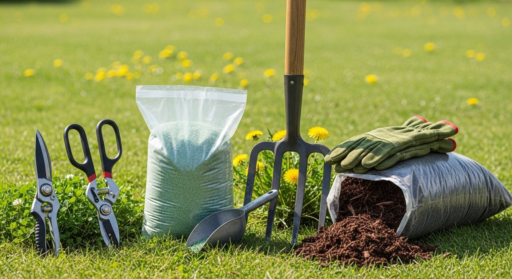

Tuinonderhoud in het voorjaar: checklist voor Amsterdam
Inhoudsopgave
- Waarom het voorjaar cruciaal is voor je tuin
- De voorjaarschecklist: stap voor stap
- Specifiek voor Amsterdam: waar moet je op letten?
- Wanneer een hovenier inschakelen?
- Veelgestelde vragen
- Conclusie
Waarom het voorjaar cruciaal is voor je tuin
Na de winter ziet je tuin er vaak troosteloos uit: dode bladeren, overwoekerd onkruid, kale plekken in het gazon. Het voorjaar is het moment om de schade te herstellen en de basis te leggen voor een tuin die de rest van het jaar prachtig is.
In Amsterdam en omgeving is de timing belangrijk. De Amsterdamse kleigrond houdt lang vocht vast, waardoor je niet te vroeg kunt beginnen. Maar wacht je te lang, dan lopen de onkruiden en ziektes je voorbij.
De voorjaarschecklist: stap voor stap
1. Opruimen en snoeien (maart)
Begin met het opruimen van winterschade:
- Verwijder dode bladeren, afgebroken takken en plantenresten
- Snoei zomerbloeiers (hortensia, buddleja, clematis) terug — zij bloeien op nieuw hout
- Controleer hekwerken en schuttingen op winterschade
- Maak paden en terras vrij van mos (Amsterdam's vochtige klimaat = veel mos)
2. Bodem voorbereiden (maart-april)
De Amsterdamse kleigrond verdicht zich in de winter. Geef je bodem lucht:
- Borders loswoelen met een grelinette of riek — niet omspitten (dat verstoort het bodemleven)
- Compost toevoegen — 2-3 cm laag over de borders voor voeding
- pH controleren — kleigrond in de regio Amsterdam is vaak neutraal tot licht basisch
- Drainage controleren — vocht dat niet wegtrekt wijst op een drainageprobleem
3. Gazon herstellen (april)
Na de winter heeft je gazon aandacht nodig:
- Verticuteren om mos en vilt te verwijderen — de #1 gazonproblemen in Amsterdam
- Kale plekken bijzaaien met een grassoort die past bij je tuin (schaduw/zon)
- Eerste bemesting met een langzaamwerkende meststof
- Niet te kort maaien — laat het gras in het voorjaar op minimaal 4 cm staan

4. Beplanting en planten (april-mei)
Het voorjaar is de ideale planttijd voor vaste planten en heesters:
- Vaste planten die in de zomer en herfst bloeien kun je nu planten
- Hagen bijplanten waar gaten zijn ontstaan
- Voorjaarsbloeiers (tulpen, narcissen) zijn nu in bloei — noteer waar je volgend najaar extra bollen wilt planten
- Klimplanten nu de grond nog vochtig is: een ideale start
5. Onkruid bestrijden (doorlopend)
Onkruid groeit het snelst in het voorjaar. Pak het nu aan voordat het zaad zet:
- Wied handmatig of met een wiedmes — vermijd chemische onkruidbestrijders
- Breng een laag mulch aan (5-7 cm) om onkruidgroei te onderdrukken
- Let extra op woekerende soorten zoals zevenblad en brandnetel
6. Bestrating en schutting (april)
- Reinig terrastegels met een hogedrukspuit of groenreiniger
- Controleer of tegels verzakt zijn — hertegel waar nodig
- Beitsen of oliën van houten schuttingen en tuinmeubels
- Repareer losgeraakte schuttingdelen voor de storm ze pakt
Specifiek voor Amsterdam: waar moet je op letten?
Amsterdam heeft een uniek tuinklimaat:
- Kleigrond: Houdt vocht vast maar wordt ook snel hard in droogte. Voeg organisch materiaal toe voor betere structuur
- Schaduw: Veel Amsterdamse tuinen zijn omringd door hoge bebouwing. Kies schaduwtolerante planten
- Kleine tuinen: Werk verticaal — klimplanten, hangende bakken en verhoogde borders benutten de ruimte
- Grachtenpanden: Keldervochtigheid kan doortrekken naar de tuin. Goede drainage is essentieel
Wanneer een hovenier inschakelen?
Sommige voorjaarstaken kun je zelf doen: opruimen, onkruid wieden, basisonderhoud. Maar voor grotere klussen is een hovenier efficiënter:
- Boomsnoeien boven 3 meter hoogte
- Gazonrenovatie (verticuteren, bezanden, doorzaaien als totaalpakket)
- Bestrating opnieuw leggen bij verzakking
- Tuinaanleg of herinrichting na de winter
- Drainage aanleggen bij structurele wateroverlast
Severa Hoveniers is gespecialiseerd in tuinonderhoud en -aanleg in Amsterdam en omgeving. Van een seizoensbeurt tot een complete tuinrenovatie.
Veelgestelde vragen
Wanneer is het te vroeg om te beginnen met voorjaarsonderhoud?
Wacht tot de nachtvorst voorbij is (gemiddeld half maart in Amsterdam). Opruimen en snoeien kan eerder, maar planten en gazonwerk wacht tot de grond opgewarmd is.
Wat kost een voorjaarsbeurt door een hovenier?
Een seizoensbeurt voor een gemiddelde Amsterdamse tuin kost vanaf €275. Voor tuinen groter dan 100m² stijgt de prijs afhankelijk van de staat en de werkzaamheden.
Hoe vaak moet ik mijn tuin laten onderhouden?
Minimaal twee keer per jaar: een voorjaarsbeurt en een najaarsbeurt. Voor een altijd verzorgde tuin is maandelijks onderhoud (via een abonnement) ideaal.
Conclusie
Het voorjaar is het belangrijkste moment voor je tuin. Een goede voorjaarsbeurt legt de basis voor een tuin die de rest van het jaar weinig aandacht nodig heeft. Begin vroeg, werk systematisch en schakel een hovenier in voor de grotere klussen.
Wilt u uw tuin klaar maken voor het seizoen? Neem contact op met Severa Hoveniers voor een gratis offerte. We komen graag langs om de tuin te bekijken en een plan te maken.
Severa Hoveniers maakt uw tuin klaar voor het seizoen
Van voorjaarsbeurt tot complete tuinrenovatie. Wij komen graag langs voor een gratis offerte. Vakkundig en betrouwbaar tuinonderhoud in Amsterdam en omgeving.

Amsterdam
Noord-Holland
Bel Ons
[TELEFOON]
Openingstijden
Ma–Vr 08:00–18:00
Za 09:00–14:00
[EMAIL]
Severa Hoveniers maakt uw tuin klaar voor het seizoen
Van voorjaarsbeurt tot complete tuinrenovatie. Wij komen graag langs voor een gratis offerte. Vakkundig en betrouwbaar tuinonderhoud in Amsterdam en omgeving.
Gratis Offerte